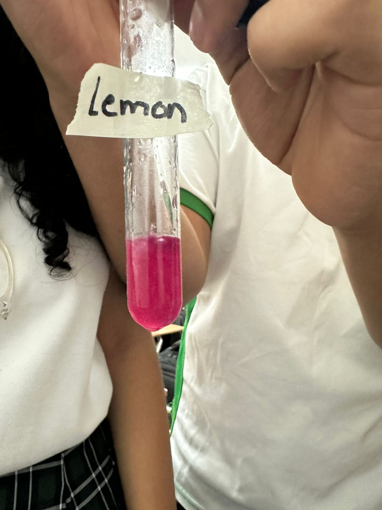

| Start | Introduction and Hypothesis | Materials and Procedure | Results and Conclusions |
|---|
|
cabbage juice orange jice lemon juice coca cola bicarbonate Lipton Nelson and Ronald pees Milk yogurt Soap Procedurefirst we add a small amount of cabbage juice into each cup of or test tube then carefully add a small amount of test substance, gently stir and observe the color change record the color and decide if it is base, acid or neutral. Finally repeat with other substances |
 |